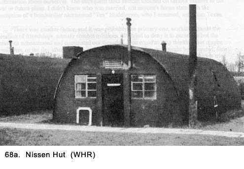
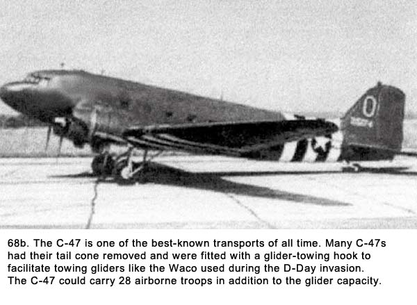
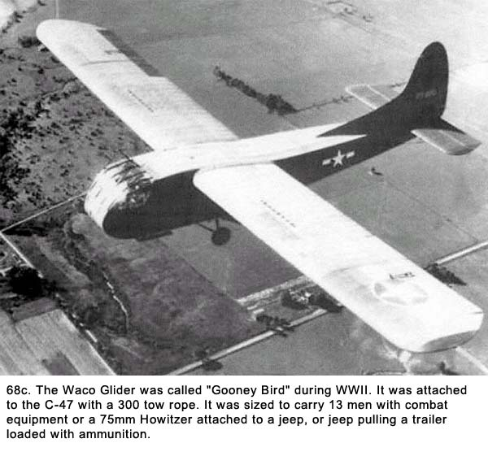
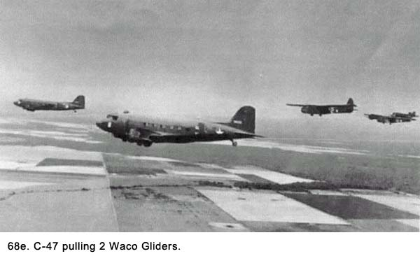
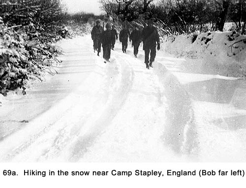
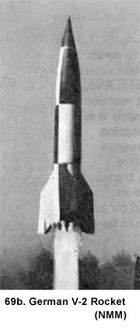
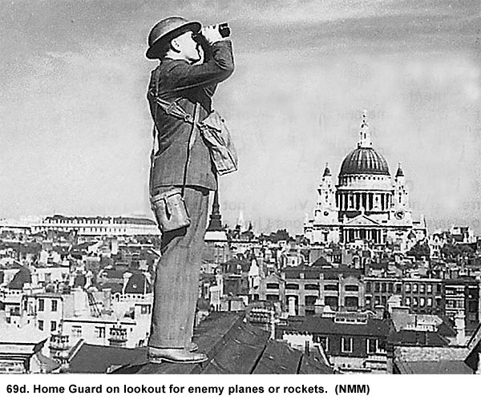
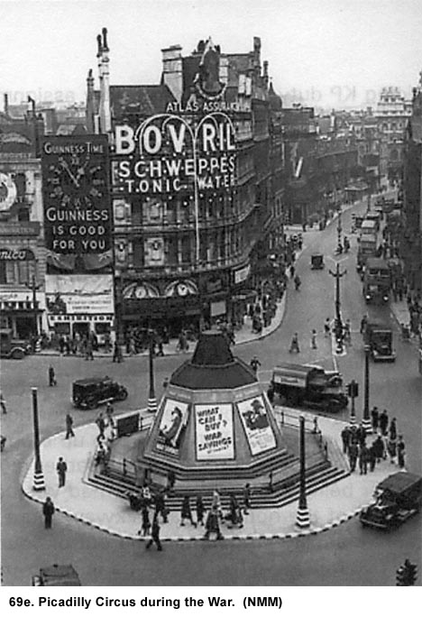

|
Table of Contents < - - - return Chapter 13 < - - - next
World War II Story by Robert F. Gallagher Chapter 12 - Camp Stapley The basic fact about human existence is not that it is a bore. It is not so much a war as endless standing in line. H. L. Menchen _______________________ A New Camp With More Bad Living Conditions The train took us south through Scotland and the western part of England. The sky and landscape were all one color; a drab gray that varied only in its shades. The weather was cold and the mood of the troops glum. Nothing that had happened, nothing we had seen, nothing we had eaten since we left New York City did anything to improve our morale. We knew we were getting closer to where the war was raging and the chances were good we would soon be participants in it. However, it was not the fear of combat that created the glum mood. We had expected that, and to some degree looked forward to it through the eyes of those who are misinformed about the horrors of war. Our environment was setting our tone. It was our lousy living conditions that bothered us. It would get a lot worse, and soon.  We arrived in the town of Wellington, unloaded, and traveled a short distance by truck to Camp Stapley in the southwest corner of England.
It was December 16, 1944, the same day the German army started a major counter offensive in the Ardennes Forest area of Belgium and Germany. It would later be known as the Battle of the Bulge.2 We got the news about what was happening about a week later, and concluded this was a serious reversal to the Allied armies, which had been advancing on all fronts up until that time. This was to be the Germans' last great offensive. With considerable resources, they drove through parts of Belgium with the objective of reaching Antwerp on the Atlantic Coast and splitting the Allied armies in two. Early in the offensive, they made extensive advancements. The Allied armies were completely surprised and too lightly defended to meet the onslaught. Casualties were high among the Americans, and thousands of our troops were taken prisoners. We wondered what this all meant to our outfit. On top of the bad news about the setback in the war, we were getting off to a bad start at this new camp. It created an immediate dislike for the place that would only get worse as time went on. The first thing that happened was we were each given a mattress cover. Next, we stood in a long line leading up to a pile of straw. They shoveled the straw into the cover with a pitchfork; that was to be our mattress while we were in camp. Straw mattresses - how primitive, even for an Army camp! Grimes commented, "I thought this stuff was only used to mix with horse manure." I had not heard so much griping from my fellow GIs since the first time we arrived at Camp Irwin on the Mojave Desert during our stateside training. Our fifteen-man crew was then assigned to a Nissen hut (Similar to the American-made Quonset hut.) that consisted of a concrete slab with a corrugated steel roof formed a semi cylindrical arch over the slab (See Fig. 68a). The ends of the building were made of wood with a couple small windows and a door at both ends. The windows were covered with drapes made of heavy burlap material better described as dirty rags. Unlike the Quonset huts, our hut had no windows along the sides. Even with the drapes pulled back during the daytime, it was so dark inside we needed the lights on at all times. The building was approximately twenty feet wide by forty-five feet long and had ample room to accommodate double the men in our crew. However, the generous open space would prove to be a detriment because the lone stove could not adequately heat so large an area. The lights consisted of three naked light bulbs with barely glowing filaments that hung from the ends of wires suspended from the ceiling. The building had no insulation and there were many cracks in the wooden ends of the building. In a desperate effort to keep the cold out, we stuffed rags in some of the bigger openings. There was one small, eighteen-inch diameter stove-officially named a British coke-and- coal stove-in the middle of the hut with a four-inch diameter stack running to the roof. A bed consisted of a wooden frame with legs about six inches high. Four-inch wide cloth strips were woven inside the frame which left openings about twelve inches square. Grimes again commented, "They look like they were made in a high school shop course on the first day of class." We put our straw mattresses on the bunks and laid our bedrolls on top of them. When we lay on the bed, we had to be careful about rolling over. It was easy to poke your elbows through the openings in the webbing. The beds were the only furniture in the building and substituted for chairs when we were not sleeping. They made uncomfortable chairs because they were built too close to the floor. Inside the Nissen hut it was always cold, and we stayed there during two months of winter weather. It snowed a lot, and with fifteen men going in and out of the hut there were always pools of water on the uneven floor from the melted snow being tracked in. This required us to put our duffel bags, gas masks, and any clothing we may not have been wearing at the time, up on our beds to keep them dry. It greatly reduced the amount of room available for sleeping. Fuel for the stove consisted of a poor grade of dried peat with a very low BTU rating. It was a light gray color. During the night we arranged to have it stoked every hour. However, when we were out of the hut during the day on assignments, there was nobody to tend it. No matter how we tried to arrange it, the fire went out often. Starting a new one was a difficult task. When we were in the hut, we dressed like we were outside, except sometimes, we took off our overcoats. We wore our wool OD shirt, pants, a sweater, field jacket, two pairs of socks, a knit hat, and boots at all times. Everything except the boots was made of one hundred percent wool. At night when we went to bed, the only thing we removed was our boots. We each had four wool blankets. Two were our own and the others were British-made that had been issued at this camp. The British blankets were coarse and stiff. We referred to them as horse blankets. They made our skin itch so badly we folded them and used them for padding under our bedding. In addition to the blankets, we each had our own bedroll, which made a big difference staying warm at night. For most of us, these bedrolls were the ones we had bought at the PX in the States. The fellows who were stuck with the Army-issued bedrolls offered us a considerable amount of money for ours because theirs weren't worth a darn. They were shaped like an Egyptian mummy case and fitted close to the body. They were dark green in color and made of a nylon material on the outside. The inside was the same OD wool material as Army blankets. They allowed for little movement while in use, but their greatest drawback was that they furnished little warmth. We treasured our PX bedrolls like gold. The only time the temperature got above fifty degrees in the Nissen hut was when the sun came out strong, and that seldom happened. The weather was mostly cloudy, cold, and humid the majority of the days we were in Camp Stapley. The only way we could do laundry was to take our socks or underwear down to the latrine and wash them in the washbasins. We then took the items back to the hut and hung them on ropes we stretched across the room. Because of the lack of heat, it took days for items to dry. The drying clothing added more moisture to the already damp conditions. Our hut happened to be at the edge of the camp, and the mess hall and the latrines were over a block away. One good feature was we were back to eating American food, which made us all very thankful. Sergeant Emerling was doing his thing in the camp kitchen, and he was doing it well as usual. Later, we heard he overstayed a trip to London. We all held our breath in fear he might lose his job but he held on to his stripes and, most important, his job, which made us all sighs in relief. A and B Batteries ate in one building, C and D Batteries in another, and Headquarters Battery ate with the officers in a third. We carried our mess kits to the mess hall in all kinds of weather, dipped them into a can of boiling water to warm them, and then stood in line to get our food. We ate at wooden tables and stayed in the mess hall as long as we could for each meal. It was warm there, unlike our gun section's hut, but we ate in shifts so there was a limit on our stay. The latrine was warm too. We must have been pretty hard up to look forward to spending time in the latrine. We were issued new shoes called two-buckle combat boots. They were high-top shoes that laced up the front and had a four-inch-high leather strap attached to the top of them with each boot having two buckles to secure the strap around the ankle. We kept the bottoms of our pants tucked into the leather strap and then blossomed them out. We thought they added something to the look of our uniforms and someone compared it to the look of paratroopers' high-laced boots. That was somewhat of an exaggeration. Our new boots eliminated the need for the leggings, which we had worn as part of our uniform up until that time. We were glad to get rid of the leggings (also called puttees) because threading the laces took so much time. Putting them on and taking them off was one of those nuisance jobs we were glad to eliminate. A British glider base was close by, and gliders would fly whenever the weather was clear enough. They were the large troop-carrying kind towed by a powered airplane (See Figs. 68b - 68e). We got up close to several of them and were amazed at their flimsy construction. They consisted of a welded metal tube frame covered with canvas, a plywood floor, and some Plexiglas windows front. They did not look as though they would hold up well during flight, much less during a rough landing.  
 There wasn't much to keep us busy in camp, and the morale of the battalion as a whole was extremely low for most of the time we were there. We had the usual aircraft identification classes, but most of us were bored to death of that subject. This was the first time we had been at a permanent camp where there was so much idle time. With the lack of interesting subjects and too much spare time on our hands, the days dragged. We spent many long hours in the cold, damp and dreary Nissen hut with only the members of our fifteen-man crew. It was the first time we were all billeted in one room. It created a new level of comradeship among us. Most of the many idle hours were spent sitting on our bunks staring across the puddles on the floor at men whom we had now known for a year and a half. Nothing about this camp made us cheerful, so we tried desperately to find ways to keep our spirits up. The loneliness made us more tolerant of each other. The effect was we began to feel like a family, and it helped us fight the depression that crept up on us frequently. There was only one inspection of our living quarters while we were at this camp. When we first heard about it, we wondered how they could expect us to clean up such a miserable place. Dillon pushed us to try. We swept the floor, straightened out the bedrolls on the bunks, arranged our gear in neat piles on the bunks, and cleaned our rifles. After finishing, we looked around and realized the place still looked like a grubby dump that could never be classified as neat. We were expecting to receive a long list of things to do to improve the appearance of the place. At the same time, there did not seem to be any logical way of doing so. Lieutenant Engler and Sergeant Kornich showed up for the inspection the next morning. There was the usual call to attention as they entered. The two of them walked through the building, opened the back door, looked out, turned around and walked back through the building and then out the front door. "What the hell was that?" cried Le Claire when they were gone. We never found out what it was but the fact there were no more inspections told us someone had decided they were a bad idea. We were mighty glad one of our least liked duties was being omitted. For exercise, we went out on the local roads and hiked for several hours. The roads were really narrow, winding lanes with little traffic. On one of our hikes the weather was very cold and it snowed heavily (See Fig. 69a). The squad of ten men I was with got completely disoriented in the snowstorm and got lost. The landmarks we had identified on the way out were completely covered by snow on the return trip. It was even getting hard to determine where the edges of the road were located. The temperature had dropped, and we were all getting very cold. After wandering around for several more hours, we sent men up to the farmhouses set back about a block from the road. Three times in a row, they came back to tell us the civilians had no idea where our camp, the British glider base, or even the town near our camp was located.  Unknown to us at the time, a situation had developed in Europe that created fear of giving information. During the Battle of the Bulge, German troops who spoke English were masquerading as GIs. They were infiltrating Allied lines to cause confusion and chaos. This had been going on long enough the civilians in England had been warned they should not give out information about the location of military installations or even municipalities because of the fear saboteurs might be dressed like American soldiers. After several more hours of continuous walking in the frigid weather, we wound up in a very small town, where we found a pub about the size of a small living room. In fact, it was a room in a typical English cottage that looked to be very old. Including the barmaid, there were only a half-dozen people in the place, and they seemed startled to see us. At first, they were not too friendly, but as we talked to them, they became more cordial. The only heat in the room came from an open fireplace and the patrons sat on the bare wooden benches near it. They seemed dumbfounded soldiers could get lost. One of them whispered to his friend, loud enough for us to hear, "Just because they pay those Yankee blokes all that money doesn't make them any better soldiers, does it?" We had tracked in a lot of snow, and were now leaving puddles all over the place. The barmaid, who was probably the owner, never took her eyes off of our dripping boots. We were tempted to order a beer-we still referred to it as beer at this point even though it was really ale-mainly so that we could stay in the warm room longer, but decided against it. While we had not been exposed to it at this point, the stories we had heard about British ale served at room temperature did not create a craving for it. Once they were convinced of our identity, we got directions to our camp. We took a lot of pains in getting these instructions detailed because we had learned from experience the English people had a habit of abbreviating directions. They said things like, "Just take the road straight ahead," even though the road had several forks that hadn't been mentioned. Or, they would say, "It's just down the road a piece," which could mean anything from a hundred yards to several miles. They would always conclude their instructions with, "You can't miss it." When we left the pub, one of the our men commented, "Yeah, you can't miss it if you make the right guesses at the intersections they forgot to tell us about." The snow was now quite deep and it made walking that much harder. We walked in a straight line and took turns being the lead man who opened a trail for the others. As anticipated, we did find several forks in the road that had not been covered in the instructions but, fortunately, we made the right guesses which direction to take. By the time we got back to camp, we had been walking almost ten hours, and we were dead tired and half-frozen. In that time, we had only taken one break because there were no dry spots to sit down. Several men had frostbite on their hands and toes. Fortunately, I didn't. After enduring the extended hike, we entered our Nissen hut looking for comfort and relief from the cold. We found only some of what we wanted. I removed my steel helmet, gun belt, gas mask, and overcoat. The overcoat could have stood up without help at that point. It had gotten wet from the snow and later had frozen into a rigid shell. The hut reeked from the musty smell of wet wool. I collapsed on my cot in complete exhaustion. I moved the cot as close to the stove as possible, looking for more heat, but it was not doing the job. Only my hands, within an inch of touching the stove, were warming up. The rest of me was far too cool to be comfortable. A nice warm shower would have done wonders, but the block-long walk to the latrine and back was the last thing I wanted to endure. A trip out the back door and down the small hill to our makeshift outdoor john would suffice to relieve other bodily functions. I had missed several meals, but not even food was high on the want list at the time. I was beginning to shake from the cold. When I thought I would not be moving about the hut on the well-puddled concrete floor any longer that evening, I removed my wet boots, changed to a couple of pairs of dry socks, and put on a dry woolen cap. Still dressed in all my clothes including the field jacket, I opened my sleeping bag, put the two army blankets inside, and slid down into it. Working myself into a fetal position, I moved down to the point where I could no longer see light. I could feel the cross ribs of the cot below me right through the straw mattress and I adjusted my position to avoid the open areas. With minor corrections, I was able to establish the most comfortable position possible. Ah! Warm at last! What a glorious feeling that gave me such a grand feeling of contentment. All of my expectations for my future, at least in the short run, were reduced to having a bed to sleep in where I was warm and dry. Immediately, I dozed off to sleep. We looked forward to our first trip into the nearby town of Taunton. It was a very picturesque English town with a population of approximately thirty thousand people.3 We were dropped off in an area away from the commercial center and this area was more like a village. It was really a suburb of the main town. The civilians tried to make us feel welcome, but there were so many GIs and British soldiers around, they just overwhelmed the place. The shops were off-limits to us, so there was nothing for us to buy. American MPs patrolled the streets to keep the peace if necessary but in the select little area we visited, they had little to do but check passes. One of the local churches had a little meeting room where they served punch and not much else. They also pushed us to attend their religious services, which turned us off to the place. We were told about an American Service Club on the grounds of Flook House off Station Road, but it was some distance from our drop off point and we never made it there. Near the end of our stay in this camp, Grimes told the rest of we crewmembers that although it was difficult to get to, the club held regular dances and was a great place to meet young ladies. "Now you tell us," cried Le Claire. The local pub near the area we visited most often was about fifteen feet square and was not off-limits. However, the local civilians would all get there early, and take it over so most of the soldiers could not get in. I took only a few trips into Taunton and don't remember it being more than a divergence. It was just something to do to break up the monotony of the camp routine. To get back to the camp from town, we loaded up on the trucks in a courtyard of a large building. As we were leaving, the headlights of the trucks would sweep across the walls of the yard. They would pick up about a dozen GIs who had their British girl friends pinned up against the walls getting their last kisses goodnight and anything else they could maneuver in a standing position. Neither the cold weather nor the public viewing seemed to have any effect on the couples. Occasionally, the driver would stop the truck for a minute or so with the headlights illuminating the amorous couples. It would produce a backlash of obscenities from the GIs at the wall, but the driver got his kicks. From talking to the local citizens in Taunton, we learned about the many ways they had prepared for the worst possible situation to happen, especially early in the war when they were fighting the Germans alone. They had all been issued gas masks and great effort was made to distribute the proper material to each house to make blackout drapes. Public air raid shelters were designated in churches and other public buildings. An invasion committee had been established. Plans for resistance were drawn in case of an invasion. Plans and materials to construct a temporary bridge over the river were made in case the Tone Bridge was destroyed. The Home Guard was trained to fight the enemy. They dragged large tree branches into large flat fields to prevent gliders from landing. They learned how to make Molotov cocktails in expectations of German tanks. Concrete tank stops were placed at the entrances to town. Taunton also accommodated many thousands of women, children and infant refugees from London who were escaping the German blitz on that city earlier in the war. In such a high alert status, it was no wonder the local farmers were reluctant to furnish us with information about the locations of military camps or towns. The British soldiers, or Brits as we called them (when we were mad at them for something, we called them Limeys), really had it tough. They were paid about one-quarter the amount for the equivalent rank of the GIs, and their uniforms left a lot to be desired. They were made from coarse wool material and looked like they would be quite uncomfortable, although I am sure that they became accustomed to them. Each enlisted man had only one uniform he worked in all day; then he went out on passes wearing the same one. There was some bantering back and forth among the Brits and GIs. They would tell us, "The trouble with you Yanks is that you're overpaid, oversexed, and over here." We would reply by telling them; "You're just sore because you're underpaid, undersexed, and under Eisenhower." Overall, however, we all got along quite well except in one area. The Americans were dating most of the local girls in town, and this did not go over well with the Brits. Several of our soldiers told us the local girls showed them pictures of GIs from our camp they had dated prior to our arrival. They were all blacks. The Southerners, or Rebels as we called them, had a difficult time accepting this fact. Unlike the American soldiers, some of whom had not left their prejudices back home, the British people were mainly color-blind. Christmas was not a very happy time, especially for the married soldiers. There were not many packages from home, and even the letters were slow in arriving. The packages that did arrive gave us a temporary lift even though they usually contained very stale cookies. At least they were a reminder of home. On Christmas Eve, our crewmembers sat around the cold, damp and gloomy Nissen hut as we had done every other day. We had no radio, newspapers, or decorations, and the few magazines that had come from the States were at least a month old. Also, it was almost impossible to read by the minimal light emitted by low-wattage bulbs hanging from the ceiling. We took a deck of cards, cut out letters to spell Merry Christmas, and strung them up across the room. Everyone talked and tried to make light of the situation, but it was a very bleak and lonely time. When we took the sign down, we each took a letter and vowed to meet back in civilian life after the war and show each other the cards. It would remind us of how not to spend Christmas Eve. On Christmas Day we had turkey and all the trimmings for dinner, but they ran out of pie before our crew got served. There was not even a religious service. Someone said the chaplain was on furlough. I spent most of the day thinking about home and wondering what my family was doing to celebrate. I tried to visualize the decorated tree and the meal they were having. The day turned out to be about as dismal as the previous evening. New Year's Eve and Day passed with nary a mention of their significance. Rumors and More Rumors The Battle of the Bulge was raging over on the continent, and the news we were getting was quite ominous. Rumors about our future were rampant, and there seemed to be a new one every day. One rumor was we were going to France to join a new Army-the rumormongers had even given it a number, the 15th-that was being formed to fight the advancing Germans. Another rumor had us being broken up and sent to Europe as replacements for infantry units. Because of the vast number of men who were killed or captured in the Bulge, many replacements were needed. Still another rumor said we were going over as antiaircraft; only we would be given armor-piercing shells for anti-tank warfare. We scoffed at this latter rumor but it seemed more real when we started to get tank recognition classes. The rumors about our being broken up and made into a line outfit were the most persistent, and word was now coming down from Headquarters Battery that the colonel in charge of our battalion had called the battery captains to a meeting regarding our situation. Still, they were only rumors. At one assembly, we were told the colonel was trying to find a target range where we could practice shooting with our rifles. It had been about a year since we had originally qualified with them in the Mojave Desert. This seemed to indicate the threat of being broken up might have some validity. None of the rumors came to pass, however, and by late January, 1945, the news from Europe started to get better. The advancing German army in the Ardennes Forest had been pushed back. General George Patton and his Third Army stopped its push into southern Germany, and a big part of their armor was sent to the Ardennes battle. The weather had cleared on the continent, and the Allied air forces were able to decimate the advancing German army from the air. These factors, along with a lot of reinforcements thrown into the battle led to the closing of the bulge. Many Americans were killed, wounded, or taken prisoners. It was one of the costliest battles of the war. The rumors regarding our unit being broken up subsided, and we felt more confident we would remain as an antiaircraft outfit. A fellow from another gun section who was a friend of my friend, Charlie Knock, had a nervous breakdown. As part of my regular duties, I was assigned to watch him. I sat on a cot with the butt of my unloaded M-1 rifle sitting on the floor between my legs as I faced the patient lying on his bunk about ten feet away. We were the only two men in this Nissen hut. I tried to talk with him, but he was completely out of his mind. I made a point of learning his wife's name and invoked it in my mainly one-sided conversation, but he did not even seem to recognize it. He talked to me several times but I had no idea what his words meant. It was the first time I had encountered a person with mental problems on a personal level-not counting my four hours of guard duty in the psychiatric ward of a hospital back in Camp Haan-and I found the experience quite unsettling. I believed at the time what had tipped him over the edge was the boring and monotonous life we were living in this remote camp. While some GIs looked upon the many idle hours as a pleasant opportunity to avoid work, others with more spirited minds found it insufferable. One of the older GIs in our outfit, before the war this man had worked for a large advertising agency in New York. I don't remember his name, but I know that Charlie sometimes referred to him as the battery intellectual. He rubbed the noncoms and some of the officers the wrong way by openly indicating they were thick-witted. Showing any sign of intelligence was dangerous enough in the Army, but flaunting it was unforgivable. He had paid a heavy penalty for his attitude during training. Things had gotten a little better for him when he became part of a gun section and was exposed less to higher ranking authority. It was very difficult for him to adapt to the inequalities and inefficiencies of the Army. This could be said about all of us, but it was much harder for the older men who had responsible jobs before entering service. They had been a part of businesses run in a much more democratic and efficient manner, and most of them could not completely accept what the Army had to offer. They took everything much too seriously. We younger men looked upon our military life with a more obedient and subservient attitude that came from our lack of experience. It made the rigors of everyday life more bearable. To put it another way, we didn't know any better. After about a week of lying on a cot in an empty Nissen hut and being watched around the clock, they shipped the man to a hospital in London. We never saw nor heard about him again. There was a lot of sickness going around. The flu was prevalent, and it usually hit the older men the hardest. We would bring them food from the mess hall to save them the trip. For the latrine, they would walk out of our back door and down a little hill, and kick a hole in the snow for their deposit. An Opportunity To Visit London Sometime in January, I got a four-day pass and went to London with two of my buddies, Joe Bernal and Glen Le Claire. We had a wonderful time. We stayed in a private home near Marble Arch in the area known as the West End, here all the houses on the block abut one another. There was no front yard as we were used to in the States, and the front door opened right onto the public sidewalk. We saw the sights of the town all day and usually well into the night. The German Air Force had caused great destruction in London and killed thousands of people during "the Blitz", but the air raids had ended by the time I arrived there. Some time before, the Germans had moved the bulk of their air power over to the Russian front in the east, and had resorted to firing V-1 and V-2 rockets at London. Still, London looked like a city at war. There were military personnel everywhere we went, posters encouraging civilians to give their utmost for the war effort, and remnants of the destruction done by the German air attacks. Most of the bomb damage was in the East End (the industrial section of the city). Where we were, there was a lot less damage, and the British people had done a good job of cleaning up most of the rubble. Years later, when I would see movies or news reels of the great damage London had experienced, I wondered how it could have been repaired in such a short time. Soon after I had gone to bed one evening, the
screaming of an air raid siren followed by an explosion awakened me. Someone
came into our sleeping area and said a V-2 rocket had hit nearby Along the streets, many of the buildings,
monuments, and Underground (subway) entrances still had sandbags in place In Hyde Park a large parcel of land where flowers had been grown before the war had been made into a vegetable garden. There were antiaircraft guns and searchlights in the park with troops manning them. They were in restricted areas to keep the operators from becoming distracted from their assignments by the many young women milling about. Despite wartime restrictions and harsh
rationing of materials, civilians went about their daily business as though
everything was normal. In fact, the Londoners and even those civilians we
met back in Taunton had a certain assuredness about them. They had been
fighting this war since September, 1939, more than two years before the
Americans got involved. Even though they knew it was a long way from over,
they felt the tide had turned and there could be no other conclusion but
victory for them and their allies. This confidence emanated from everyone we
met, as did the feeling this was a British war. While the Americans
soldiers, (and certainly our equipment,) greatly outnumbered British, when
talking to them they left us with the impression we were there just to help
them out. However, they did have great respect for the American soldiers and
even for the seemingly unlimited amount of planes, tanks, vehicles, and
other supplies we furnished.  London had a lot of clubs and places for the GIs to go, including some with dancing we attended hoping to meet young ladies. Some elderly men in some kind of auxiliary military uniform usually furnished the music. We would also go to the movies there. When the movie was over, we had to stand at attention while they played God Save the King, the British national anthem. We would always try and cut out early but the projectionist, who would anticipate this move, would start the music before the last scene of the movie was over. Despite the tight blackout restrictions, an
active nightlife went on in the city. We frequented a great service club
near Piccadilly Square (See Fig. 69e). One evening while we were walking back to our
quarters from this club, we ran into one of those heavy fogs for which
London is famous. We had traveled this route before and thought we knew it
well, but we got lost. There were few people on the street so we were
climbing lampposts looking for signs to tell us what street we were on. It
took us several hours to cover the distance we should have covered in just
half an hour.  My friends and I were still having a problem adapting to the room temperature British version of beer, so our trips to the pubs were limited. We were introduced to pints and haf-pints (half-pints) of ale instead of glasses of beer. Hard liquor like whiskey was almost impossible for enlisted men to get, although most of us younger men had not yet developed a taste for it so it was not missed. Most of the larger pubs were so crowded it was difficult to move around. The patrons were a mixture of GIs, British soldiers and civilians. The GIs were quite popular in these places because with a little bit of encouragement, they would buy a round for all the people around them. They also dispensed cigarettes generously. American cigarettes were in great demand. The GIs described the British cigarettes as a mixture of straw and dried manure. Their leading brand was called Players. Near the end of our stay in London, we found a small pub that was not as crowded in an out-of-the-way place near where we were staying. The civilians would challenge us to dart games for a pint. It was amazing to see their skills improve during a game from what we had seen beforehand. However, losing was no big thing. The price of ale was rationed like everything else in Britain, and it was relatively cheap. We visited all the sightseeing attractions including old churches, royal residences, government buildings, parks, historic sites, and bridges. Some of the artifacts had been removed from the museums and churches for safe keeping during the blitz. Another thing we would do was to go to the entrance to Hyde Park at the Marble Arch, near what was called the Speakers' Corner. There, we would heckle the soapbox orators who were spewing out their hate. Some of it was against their government, but most of it seemed to be aimed at the Irish and the Catholics, subjects about which I had my own strong beliefs. I guess Nazism, Fascism, and Communism were not problems with these people because they never mentioned them while we were there. We would harass the speakers verbally, then shake the little stands they were on to disrupt their orations. The Bobbies (British policemen), who were stationed nearby in anticipation of someone's drastic reaction to the fiery speeches, would come over and politely but firmly tell us to stop. While in London, I looked for a high-class restaurant where I could get a good meal. I knew that England had price restrictions on everything, including food in restaurants, so I wasn't too concerned about what it would cost. I talked Joe and Glenn into going with me. We picked out a very elegant-looking place with a doorman in the better part of town. We went in and ordered one of the more expensive entrees on the menu. What we wanted was a good steak, and the menu item we selected sounded like it was some kind of a good cut of beef. What we did not realize was there was no such thing served in English restaurants at that time. What we thought we ordered and what we got were two completely different things. The meat was a small roll that might be called a meat loaf except it was so loaded down with bread and other fillers it wasn't even meat colored. It came with a large dry potato, plain carrots, and cabbage. Everything but the meat had been boiled and nothing was seasoned. The portions were large and tasteless. The three of us struggled to eat the meal. Even water was being conserved in England so we had trouble getting refills of our tiny water glasses to wash the food down. There was also a shortage of waiters. Several large posters scattered around the restaurant stated, in effect, "The King doesn't waste food so you shouldn't either." After finishing about half of the meal, it took another half-hour to get our check. Finally, we got out of there and away from the dirty looks of other customers, who were all civilians. From then on, we stayed away from English restaurants. Joe Bernal commented, "We should have learned our lesson on our way over here on the Nieuw Amsterdam with the British cooks." A few hours after our visit to the restaurant we found a street vendor selling fish and chips in a newspaper container rolled into a shape resembling a large ice cream cone. The chips were on the bottom with the fried fish on top. Despite the many-layered thickness of the cones, the grease flowed through it almost immediately but no meal ever tasted so good. About a month after the first furlough, I got another three-day pass to London, and this time just Joe Bernal and I went. Most of the English people we met treated us with great kindness. Joe had distant relatives there, and, when we went to see them, they invited us for dinner. Even though they had strict rationing for all their food, they wanted to share it with us. The family consisted of a husband, a wife, and two young children. They lived in a small apartment they referred to as a flatlet. It was crammed with too much furniture so old it must have been passed down through several generations. As we sat at their dining room table talking and enjoying our meal, I thought about how amusing their accents sounded and how unfamiliar some of their expressions were. One of the children, a girl of about four years old, kept staring at me, especially, when I spoke. Finally, she said to her mother as she pointed at me, "Mommy, he talks funny." I guess we sounded as different to them as they did to us. The main course that evening was a rump roast that weighed less than two pounds and wasn't much bigger than my fist. We each got two small slices of it so we filled up on potatoes and cabbage - their main staples. After the meal, they told us the roast was the family ration of meat for the week. We offered them cigarettes, but they refused, so we left some without them knowing about it. Cigarettes, especially American cigarettes, were a real luxury, and in some ways, they were better than money. In those days almost everyone smoked, especially in England and, as we would learn later, on the Continent. There was very little black market activity going on in England as far as we could see. The nearest thing to it was their bartering system. They wanted American fountain pens, wristwatches, and cigarettes, and went to great pains trying to find things to trade for them. The people took the war very seriously and put the war effort before their own needs. They had a tough time of it for many years, and yet the spirits of the people we met always seemed high. Soon after we got back to camp, Joe Bernal learned his brother had been killed in action in Europe. Joe had talked a lot about him when we were sharing a pup tent in the Mojave Desert. His brother had been a member of a tank crew and was killed in the Battle of the Bulge. Because Joe was the only other child in the family, he was offered a chance to go home. I don't remember if it was for a furlough or if it was to be permanent, but he elected to stay with us. He became very quiet for a long period of time, and we just let him alone with his thoughts. Most of us had a hard time trying to think of something to say to him so we said nothing. There wasn't a word said by anyone in authority from our outfit either, which did not surprise us. He wrote many letters home and received many himself. There was no telephone to talk to his family directly so his letters were his only link to them. Many years later, I thought, what a miserable way to mourn for a loved one. I also wished I had said many things to him I hadn't. One of the many questions we had while at this camp was, "Where is our heavy equipment like the 40mm guns, directors, M-51 mounts, and two-and-a-half trucks?" There was no sign of them and in keeping with Army tradition, nobody in authority made any effort to explain their absence. We had assumed they had been shipped from California and would arrive any time. After we were in England for almost three months, we were finally notified we would be receiving all new equipment. When it arrived, we cleaned the Cosmoline from the guns, lubricated the joints, lightly oiled the breeches, and prepared them for operations. A deadly accident occurred during this time of preparation. One of the crew chiefs of another gun section was killed when hit in the head by a gun barrel during a normal disassembling procedure. He would be our battalion's first casualty but definitely not the last. The trucks were loaded up with sand bags, shovels, picks, tents, cots, and many other items we had brought with us from the States. Near the end of our stay at this camp, our gun section had a change in personnel. Cogdill was sent back to the States for personal reasons. The specific reason was never explained. A fellow named Wold was brought in to replace him. He had been attached to Headquarters Battery for some time and we all knew him, if only slightly. His easygoing manner and positive attitude helped him blend in with the other crewmembers in a hurry. We liked to kid him about his Kentucky accent that seemed to vary in intensity depending on the situation. In slow conversations during quiet times, it was heavy while during active situations it was barely noticeable. We assumed since we now had all of our weapons in hand it would not be too long before we would be shipped over to the continent. Things were not getting any better at this camp, and we were anxious to leave, even if it meant going over where the war was still going strong. We had been training for a long time, yet nothing was happening. The delay in being called to serve in the war zone was creating frustration among us and there was even a sizeable amount of guilt. Getting over to continental Europe looked like a better alternative to the boredom we were experiencing. We felt we could make a difference in the war effort because we were well trained and eager to show our skills. What we were hearing about the war was only news bulletins, and the full significance of the horrors did not fully register. We hadn't a clue what it would feel like to experience combat. Our shortsightedness went only as far as the limits of our miserable camp in southwestern England. If we had thought about it objectively, perhaps our concern would have been different. Maybe that's the way the Army got you ready to fight wars. Make the safe camps so miserable anything else looks better; at least from a distance. The Nissen hut we lived in had become so depressing we could barely tolerate it on good days. We fought off somber thoughts on the many bad ones. As a gun section, our morale had hit a new low. In hindsight, we should have been happy we were not over on the continent. But you see things only from your own perspective, and from our viewpoint, we wanted to be anyplace but Camp Stapley. Chapter 13 < - - - next Table of Contents < - - - return
Footnotes and Source of Photographs. Copyright, Robert F. Gallagher, 1999 - 2010, all rights reserved on all images and content. gallagherstory.com |